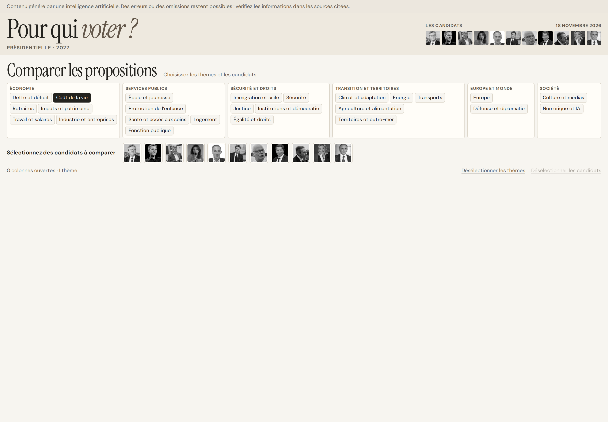
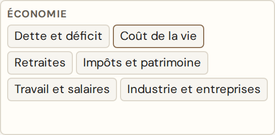
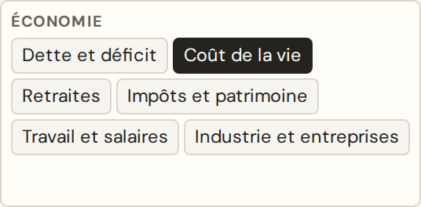
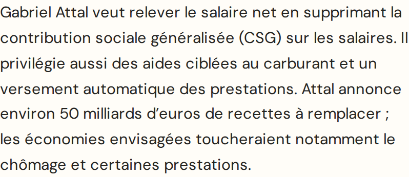
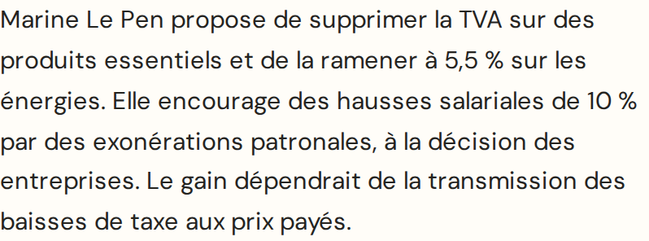
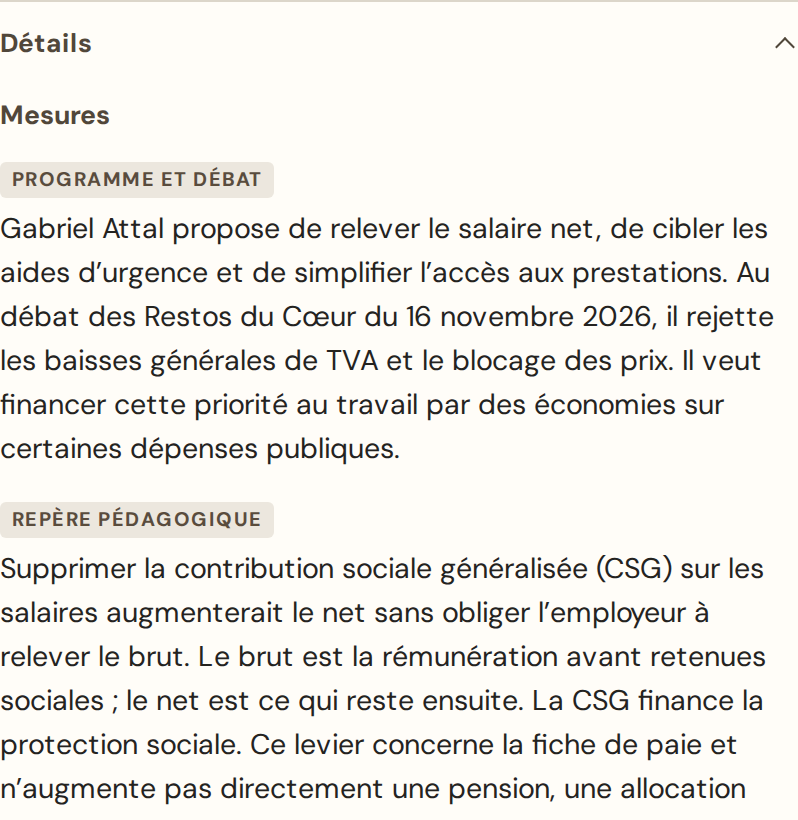
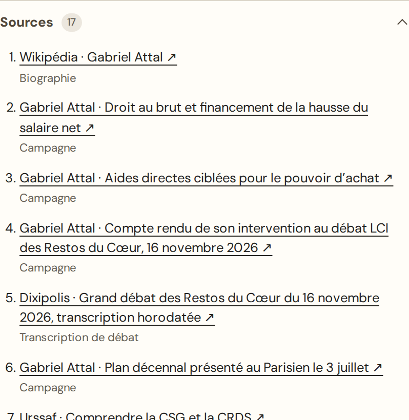

PRÉSIDENTIELLE 2027
Des milliers
de ressources.
LES PROGRAMMES90 pages.
Et après ?
Et après ?
LES INTERVIEWS2 h 16 min
▂ ▅ ▃ ▇ ▄ ▂ ▆ ▃ ▅ ▂ ▆
… et encore un débat.LES DÉBATSPar où
commencer ?
commencer ?
MOI AUSSI, JE ME SUIS POSÉ LA QUESTION.
Pas le temps
de tout
regarder.
Alors, j’ai construit un outil.
UN OUTIL POUR Y VOIR PLUS CLAIR
Pour qui
voter ?
Construit avec une IA.

01 / TES THÈMES
Ce qui compte
pour toi.


Logement, école, pouvoir d’achat…
02 / TES CANDIDATS
Qui veux-tu
comparer ?
Sélectionnez des candidats à comparer
Clique sur les portraits.
03 / LE MÊME THÈME, LES PROPOSITIONS
Tu compares.
Coût de la vie


Un résumé. L’essentiel.
POUR ALLER PLUS LOIN
Les détails.
Les sources.


ET SURTOUT
L’IA peut
se tromper.
Vérifie les sources.
POUR QUI VOTER ?
Fais-toi
ton avis.
pourquivoter.fyi↗
Compare les propositions.
Vérifie les sources.
Vérifie les sources.
Des milliers de ressources, des heures d'interviews...
Moi, j'ai pas le temps de tout regarder.
Alors j'ai créé Pour qui voter, avec une IA.
Tu choisis tes thèmes,
tu sélectionnes les candidats,
et tu compares leurs propositions.
Un résumé pour comprendre vite.
Les détails et les sources pour creuser.
L'IA peut se tromper : vérifie les sources.
Pour qui voter, point F Y I.
Fais-toi ton avis.